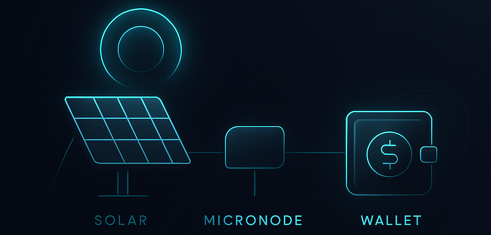

1. Connect Your MicroNode
Install the Sunaryum MicroNode on your solar panel. Enter your wallet address to bind your energy production to your identity. Each kWh measurement is signed using your private key, ensuring authenticity and ownership.
